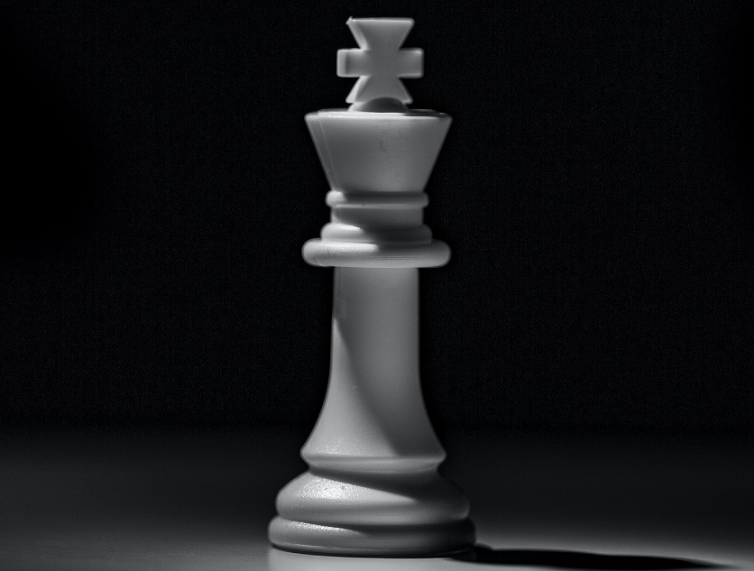
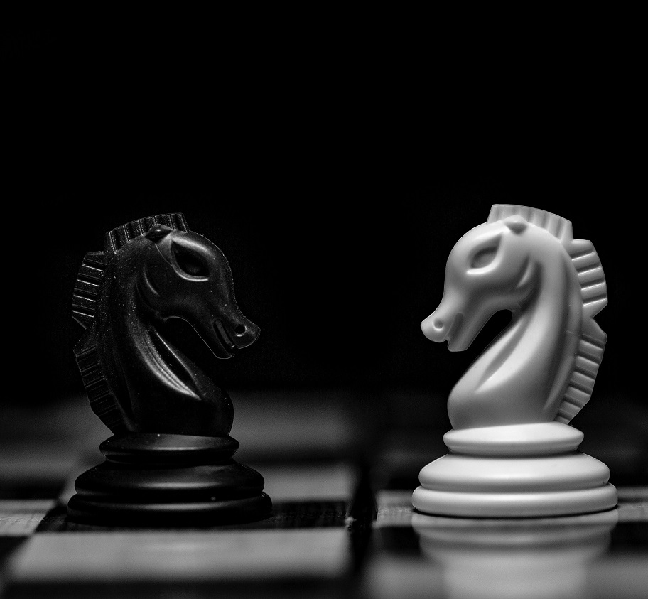

Hur vinner man
För att vinna i shack gäller det att sätta motståndaren i schackmatt. Det betyder att en av dina pjäser kan ta kungen och att oavsett var kungen går på måtständarens drag kan hen inte rädda sin kung. Man tar aldrig dock kungen då man inte får göra ett drag som sätter sin egna kung i schack så spelet slutar utan att man tar kunken. Som ett resultat av dessa regler finns det något som het patt. Det är ifall motståndaren inte kan flytta utan att sättas i schack men inga av sina egna pjäser kan ta kungen, då blir det oavgjort
Hur ser brädet ut
Schack spelas på ett bräde med 8x8 rutor. Varje ruta har en koordinat och en färg. Längst ner till vänster är A1 som är vitt färgad. Rutor nuddar inte direkt någon annan ruta av samma färg som sig själv eftersom färgerna bytts mellan. Uppsätningen av pjäser på raden från A till H går torn, springare, löpare, dam, kung, löpare, springare, torn. Andra raden är bara bönder. Det är samma uppställning på motständarens sida och vitt står på första raden. Detta betyder att båda damerna ska stå på D filen och kungen på E filen på motsatt färg av sig själv, tornen står i hörnen med springarna bredvid dem. Löparna hamnar också på olika färger.

Pjäserna och böndernas rörelse möjligheter, förutom springaren
Nedan ser vi en dam på ett bräde. Den kan röra sig åt alla håll hur långt den vill. Torn kan röra sig horisontellt medans löpare rör sig diagonalt. Bönder kan ta ett steg framåt eller fånga diagonalt, kan inte fånga något på rutan framför. På sitt första drag kan bönder ta två steg framåt. När den har den 8:e eller 1:ta raden så uppgraderas den till en pjäs som man väljer. Kungen kan gå åt alla håll men bara en ruta

Springarens röresle förmåga
Till skillnad från alla andra pjäser och bönder kan hästa gå igenom andra pjäser och bönder. En häst rör sig två rutor vertikalt eller horisontelt, sedan går den en ruta som inte är runt samma axel. Om den rör sig två rutor vertikalt rör den sig en ruta horisontelt och vice versa. Som de andra kan den dock inte ställa sig på en vänlig pjäs och den tar en motståndar pjäs om den är där den ställs
